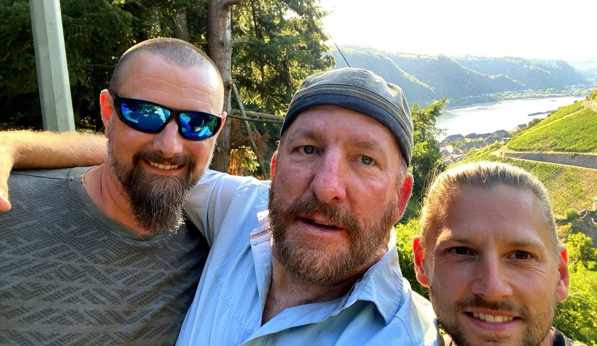

BLOG · STAYING
Albergues vs Private Rooms: Which Is Right for You?

- TopicStaying
- One trip, both waysSpring 2019, Saint-Jean to Burgos
- Albergue bunkabout 6-18 EUR
- Private roomabout 45-75 EUR
Short answer: you may not have to choose - even inside one trip. In the spring of 2019, months before I met the two German brothers I now walk with, I walked the Camino Frances from Saint-Jean-Pied-de-Port to Burgos with my two daughters. Most nights we slept two different ways in the same town: Sarah and Katie in an albergue, their father in a private room down the street. They would not have traded their bunks for anything. Neither would I. This post is what that trip - and eight more caminos since - taught us about the albergue-versus-room question.
One trail, two caminos
The arrangement was planned, though nothing was booked ahead - we walked into each town and sorted it out. The girls chose albergues every chance they got, and I am glad they did. What they got from the bunk rooms was exactly what a private room cannot give you:
- Their peers. A dormitory full of walkers their own age, from everywhere, going their way
- The cooking. Albergue kitchens, shared shopping, big improvised meals - half the social life of the Camino happens over a stove
- The fun. They made their own friends, fast, the way you do when you share a room and a washing line
And I made my own friends - mostly while walking, and definitely at supper and in the evenings, when every pilgrim in town ends up at a table somewhere - and then the two worlds kept colliding, happily. We met each other's friends. We often walked together, and often walked separately, a kilometre apart on the same trail, each of us inside our own little moving village. Every evening the villages merged in the same town square.
My side of the street had its own pleasures, and I will not pretend otherwise: a door that locks, a bathroom of my own, sleep with nobody else's snoring in it. Mostly I took hotels and pensions. Occasionally a monastery - where the nuns, among their other kindnesses to pilgrims, took in my laundry and gave it back clean, which felt like a small miracle somewhere around day ten. And a couple of nights on that trip I slept in an albergue myself, planned - partly to share the girls' world, partly to remember what it was. I enjoyed my comforts. I also enjoyed those nights. At Burgos we left the trail and spent a week in Lisbon and Portugal being tourists - no boots, no beds to choose at all, which settled the argument entirely for seven days.
What the two beds cost
The money is the simplest part of the ledger. A municipal or parish albergue bunk runs roughly 6 to 12 EUR, some by donation; a private albergue bunk roughly 12 to 18. A decent private room in a trail town runs roughly 45 to 75 EUR a night - call it 25 to 40 EUR each for two sharing, and less again split three ways, as the brothers' rooms often are. Over a two-week camino, albergues every night might cost you 150 EUR; private rooms, 400 to 500 a head. Over five weeks, the gap becomes the price of another trip. Nobody should wave that away - for a young pilgrim walking long, the albergue is not a compromise, it is what makes the trip possible.
What each bed gives you - the honest ledger
Sleep belongs to the private room, and at our age sleep is the fuel the next day runs on. Company belongs to the albergue - the communal table is the Camino's living room, and the brothers find our company at lunch and on the trail instead, knowing some nights we miss the other kind. Certainty can belong to either: a booked room ends the bed race, but a first-come albergue in a quiet month asks nothing of you at all. Freedom belongs to whoever books least - which brings us to the thing people get wrong about us.
We do not book it all in advance
People imagine the private-room pilgrims with a spreadsheet and every night fixed before the flight. Some do. The Camino Brothers mostly do not: we book during the hike - that evening's room from the trail, or a day or two out - keeping just enough certainty to walk relaxed and just enough slack to change our minds (post 1's Norte story is that slack, used). And on the 2019 trip we booked nothing ahead at all: the plan was the pattern, not the beds. Three styles, all legitimate - every night fixed, a day or two ahead, or walk in and see. Pick the one that lets you sleep at night, in every sense.
The brothers run the gamut
And lest the brothers sound like men of one note: since 2019 we have slept in apartments more often than anything, but also in a castle above the Rhine, a university dormitory in San Sebastian, a log cabin over the river at Kestert, a tent the night before Santiago, pensions, and casas rurales in the hills. The thread through it is not a category - it is a door that closes, a bed that was findable from the trail that day, and an evening with a table in it. Pilgrims who swear by one kind of bed are missing half the fun of the other half.
The middle beds
Between the bunk and the hotel room there is a whole staircase we have used without thinking of it as one: a private room in an albergue (roughly 35 to 55 EUR - the communal dinner downstairs, a door that locks upstairs), a pension over a bar, a monastery cell with laundry by nuns. If this post has you torn between the girls' answer and mine, start on the stairs.
The honest summary
My daughters chose the albergue and were right. I chose the private room and was right. The Camino did not make us pick a side - it let a family walk one trail a kilometre apart and meet every evening with different stories, which is maybe the best review either bed will ever get. These days the brothers sleep in private rooms, booked a day or two at a time, and I still think the girls had the richer nights and the worse sleep, and that both halves of that sentence are true. Choose by your age, your budget and what you want the evenings to be - and if you are travelling with people who choose differently, let them. Buen camino, whichever bed you land in.
From the trail to the page
These posts are the tidy lessons. The book is where they came from. Buen Camino, Brother: A WhatsApp Story is built from our WhatsApp messages - Mike in Canada, Nicki in Germany, planning in real time since 2019. Choosing routes and dates, settling daily distances, booking beds, changing plans mid-walk. The ups: eight caminos across Spain, Portugal, Germany and Austria. The downs: illness, a clinic visit, two pandemic years apart - and ordinary life between the walks, the hard parts and the good parts. And underneath it all, a friendship that started between strangers in 2019 and is still going almost every day. Learn from the real planning, not just the polished advice.
Coming January 2027. Join Camino Dispatches
Walking your own Camino? Keep the journal as you go. I built Townstamp after eight caminos of wishing for exactly this: every entry stamped with the town and the date, photos kept with the words, and a book-style PDF of the whole trip when you get home. Townstamp